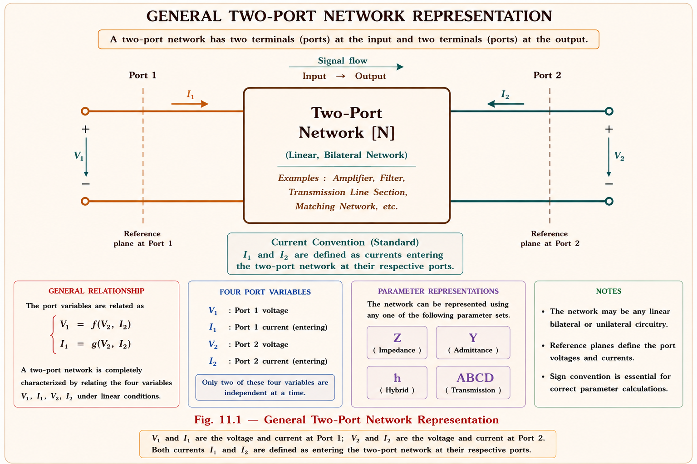
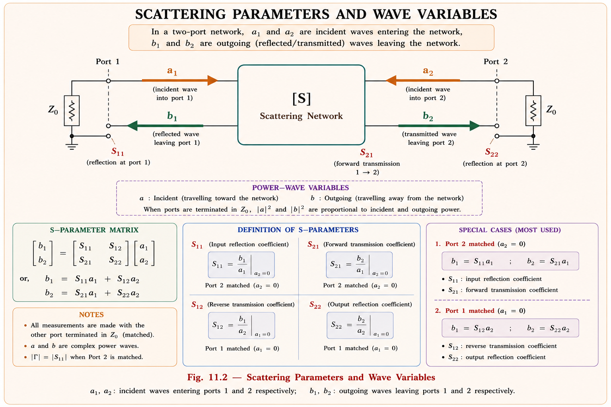

Scattering matrix, two-port network parameters, power waves, return loss and insertion loss — complete derivations, reciprocity and losslessness conditions, and the full set of GATE EC / IES E&T concepts with solved numericals.
At audio and low radio frequencies, a two-port network is comfortably described using Z, Y, h or ABCD parameters, all of which are defined in terms of total voltage and total current at each port. This works because at low frequencies the wavelength is many kilometres long, so a measuring lead a few centimetres in length looks like a perfect short circuit — voltage and current are essentially the same at every point along it.
At microwave frequencies (300 MHz – 300 GHz), the wavelength shrinks to centimetres or millimetres — comparable to the physical size of the components themselves. A connecting lead of even a few centimetres now behaves like a transmission line with its own impedance transformation. Three practical difficulties arise:
S-parameters are the microwave engineer's universal language. A Vector Network Analyser (VNA) injects a known incident wave and measures the reflected and transmitted waves directly — exactly the quantities S-parameters describe. This is why every microwave component datasheet — filters, amplifiers, couplers, circulators — is specified purely in S-parameters.
Before introducing S-parameters it helps to recall the conventional two-port description, since S-parameters can be converted to and from these forms and many GATE questions test exactly this conversion.

| Parameter | Defining Equations | Test Condition | Limitation at Microwave |
|---|---|---|---|
| Z (Impedance) | V₁=z₁₁I₁+z₁₂I₂ V₂=z₂₁I₁+z₂₂I₂ |
Open-circuit (I=0) | True open impossible |
| Y (Admittance) | I₁=y₁₁V₁+y₁₂V₂ I₂=y₂₁V₁+y₂₂V₂ |
Short-circuit (V=0) | True short impossible |
| ABCD (Transmission) | V₁=AV₂+BI₂ I₁=CV₂+DI₂ |
Open / Short | Same as above |
| S (Scattering) | b₁=S₁₁a₁+S₁₂a₂ b₂=S₂₁a₁+S₂₂a₂ |
Matched load Z₀ | Realisable, stable, safe |
ABCD parameters remain extremely useful at microwave frequencies for cascading networks (matrices simply multiply), but they are still measured indirectly — usually by first measuring S-parameters and converting, since S-parameters are what a VNA actually captures.
At each port of a microwave network we define a pair of normalised power waves: an incident (or input) wave \(a\) travelling toward the network, and a reflected (or output) wave \(b\) travelling away from it. These are normalised so that \(|a|^2\) and \(|b|^2\) represent power, not just voltage.
Here \(V_n\) and \(I_n\) are the total voltage and current at port \(n\), and \(Z_0\) is the reference (characteristic) impedance, usually \(50\,\Omega\). \(a_n\) carries power flowing into the network and \(b_n\) carries power flowing out of it. The net power entering port \(n\) is simply \(P_n = |a_n|^2 - |b_n|^2\).

For a linear two-port network, each outgoing wave is a linear combination of both incoming waves:
Each individual S-parameter is obtained by driving one port with an incident wave while terminating every other port in a matched load (\(a_2=0\) when exciting port 1, and vice-versa). This is the practical trick that removes the open/short requirement entirely.
Read \(S_{ij}\) as "wave coming out of port i due to a wave going into port j." First subscript = observation port (output), second subscript = excitation port (input). \(S_{11}, S_{22}\) are reflection terms (same port); \(S_{12}, S_{21}\) are transmission terms (different ports).
A length of lossless line terminated in its own \(Z_0\) at both ends produces no reflection but a pure phase delay \(\beta\ell\) on transmission:
Using the standard derivation (driving port 1 with \(a_1\), port 2 matched, solving the voltage divider at the junction):
Set \(R=0\) in the series case: \(S_{11}=0,\;S_{21}=1\) — a plain through-line, as expected. Set \(R\to\infty\) in the shunt case: \(S_{11}\to 0,\;S_{21}\to 1\) — open shunt branch vanishes, again a plain through-line. These limiting checks are a fast way to verify any derived S-matrix in an exam.
A network built only from linear, passive, non-gyrotropic materials (no ferrites, no active devices) is called reciprocal. For such a network the transmission in either direction is identical:
A network is additionally called symmetric if swapping port 1 and port 2 leaves the network's behaviour unchanged — for example a uniform length of line, a symmetric T-junction, or a balanced attenuator. Symmetry adds the further condition:
Reciprocity (\(S_{12}=S_{21}\)) does not imply symmetry (\(S_{11}=S_{22}\)), and symmetry does not imply reciprocity. They are independent properties — test each separately against the matrix given in the question.
For a lossless network, no real power is dissipated inside it — all incident power must reappear as reflected or transmitted power. Total power conservation across all \(N\) ports requires:
Since this must hold for every possible excitation \([a]\), the bracketed matrix product must equal the identity matrix — this is the defining condition of a unitary matrix:
Expanded for a two-port network, this single matrix equation gives three independent scalar conditions:
Physically: \(|S_{11}|^2 + |S_{21}|^2 = 1\) means power reflected at port 1 plus power transmitted to port 2, as fractions of the power incident at port 1, must add up to exactly unity — none can be lost as heat.
To check if a given S-matrix represents a lossless network: square the magnitude of every entry in each column and sum — every column-sum must equal 1, and the dot product of any two different columns (one conjugated) must equal 0. If even one column fails, the network is lossy.
Return loss quantifies how much power is reflected back from a port, expressed in dB. It is simply the magnitude of the input reflection coefficient converted to a logarithmic scale:
A higher return loss value (in dB) means less power is reflected — a well-matched port. A perfectly matched port (\(S_{11}=0\)) gives \(RL=\infty\) dB; a total mismatch (\(|S_{11}|=1\), open or short) gives \(RL=0\) dB.
Insertion loss quantifies the power lost in transmission through the network, expressed in dB:
For a lossless, perfectly matched through-connection, \(S_{21}=1\) and \(IL=0\) dB. Real components (filters, connectors, attenuators) always show some positive insertion loss due to dielectric, conductor, or radiation losses, plus any mismatch loss.
| |S₁₁| | Return Loss (dB) | Match Quality |
|---|---|---|
| 1.0 | 0 dB | Total mismatch (open/short) |
| 0.316 | 10 dB | Acceptable |
| 0.1 | 20 dB | Good match |
| 0.0316 | 30 dB | Excellent match |
| 0 | ∞ dB | Perfect match |
Since \(|S_{11}|=|\Gamma|\), every formula relating reflection coefficient to VSWR carries over directly: \(\text{VSWR} = \dfrac{1+|S_{11}|}{1-|S_{11}|}\). A GATE question giving VSWR can be converted to \(|S_{11}|\), and then to return loss, in two algebra steps.
\(|S_{11}|=0.2\).
A 14 dB return loss with VSWR 1.5 represents a reasonably well-matched, though not perfect, port — typical of a practical connectorised junction.
Reciprocity: \(S_{12}=S_{21}=0.8\angle 90^\circ\) → condition satisfied, network is reciprocal.
Losslessness — column 1:
Column 2:
Orthogonality:
All three conditions hold → the network is both reciprocal and lossless. (This particular matrix represents an ideal symmetric 3 dB hybrid-type coupling.)
Z-parameters require driving one port and leaving the other open-circuited (\(I=0\)) to measure \(z_{11}=V_1/I_1\). At 2 GHz, "open circuit" is not achievable — any lead has parasitic capacitance that conducts AC current, so the boundary condition \(I_2=0\) is never truly met. Worse, many transistors are unstable (potentially oscillatory) when left open or shorted, risking destructive oscillation during the measurement itself.
S-parameters sidestep both problems: the unused port is terminated in a real, physical \(50\, \Omega\) matched load — a condition that is both easy to realise and guarantees stability, since a matched termination absorbs reflected power instead of re-injecting it. This is why a VNA, not an LCR-style bridge, is the standard microwave characterisation instrument.
For a two-port microwave network, \(S_{21}\) represents:
Why: The first subscript is always the observation (output) port, the second is the excitation (input) port — and S-parameters are always defined under matched termination of all other ports, never open/short.
A two-port network has \(S_{11}=0.5\). The return loss at port 1, in dB, is approximately:
Why: \(RL=-20\log_{10}(0.5)=20(0.301)=6.02\ \text{dB}\approx 6\) dB.
For a lossless, reciprocal two-port network, which of the following must necessarily be true?
Why: Losslessness gives the unitary condition \([S]^{*T}[S]=[I]\); reciprocity (independently) gives \(S_{12}=S_{21}\). Symmetry (\(S_{11}=S_{22}\)) is a separate, additional property not implied by either.
S-parameters are preferred over Z and Y parameters for characterising microwave two-port networks mainly because:
A matched attenuator has \(S_{21}=0.1\). The insertion loss is:
Why: \(IL=-20\log_{10}(0.1) = -20(-1) = 20\) dB.
Don't multiply the full matrix — just square-and-add magnitudes column-wise. If both column sums equal 1 and you're short on time, most GATE objective questions stop there; the orthogonality condition is rarely needed unless the question explicitly asks for "complete" verification.
True open/short unrealisable at microwave frequencies; many active devices unstable under those conditions. S-parameters use matched \(Z_0\) termination instead.
\(a_n=\frac{V_n+Z_0 I_n}{2\sqrt{Z_0}}\), \(b_n=\frac{V_n-Z_0 I_n}{2\sqrt{Z_0}}\). \([b]=[S][a]\). \(S_{ij}\): out at i, in at j, other ports matched.
\([S]=[S]^T \implies S_{12}=S_{21}\). Holds for passive non-gyrotropic networks. Broken by ferrite isolators/circulators.
\([S]^{*T}[S]=[I]\) — unitary matrix. Column-wise: \(|S_{11}|^2+|S_{21}|^2=1\), \(|S_{12}|^2+|S_{22}|^2=1\), cross term = 0.
\(RL=-20\log_{10}|S_{11}|\) dB. \(IL=-20\log_{10}|S_{21}|\) dB. Higher RL = better match. Lower IL = less transmission loss.
\(|S_{11}|=|\Gamma|\), so \(\text{VSWR}=\frac{1+|S_{11}|}{1-|S_{11}|}\). Connects S-parameter theory directly to transmission-line matching.
Stuck on S-parameter derivations, reciprocity proofs, or a numerical? Ask directly.
All technical content is derived from the following standard textbooks and learning resources. All explanations, derivations, diagrams and examples are original to Aarova AI.